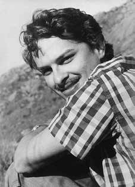

Raul
Amaro
Nin
Ferreira
CIRCUNSTÂNCIAS DA MORTE
Raul Amaro Nin Ferreira foi morto entre os dias 11 e 12 de agosto de 1971 após ser preso e torturado por agentes da repressão. Na noite do dia 31 de julho, quando dirigia em direção a um restaurante em Copacabana, Raul foi parado, junto com um grupo de amigos, por uma blitz de soldados do Exército, sendo liberado após a identificação de todos.
Mais tarde, contudo, ao sair do restaurante, por volta de uma e meia da madrugada do dia 1º de agosto, foram novamente parados por uma operação policial intitulada “Pára-Pedro”, realizada na rua Ipiranga, no bairro de Laranjeiras. Após revistarem o carro e encontrarem alguns mapas, considerados “suspeitos”, os agentes militares prenderam Raul e um casal de amigos de trabalho do Ministério da Indústria e Comércio que estava com ele no veículo: Saidin Denne e Yone da Silva Denne.
De acordo com os documentos produzidos pelo Serviço Nacional de Informações (SNI), Raul Amaro permaneceu preso durante toda a manhã do dia 1º de agosto no prédio do Departamento de Ordem Política e Social (DOPS-GB). Por volta de uma hora da tarde, uma equipe do DOPS, liderada pelo agente Mario Borges, dirigiu-se à casa de seus pais, no bairro da Gávea, para realizar buscas no local, pois Raul inicialmente informara que ali residia. Posteriormente, os policiais descobriram que o mesmo morava sozinho em um apartamento em Santa Teresa, Raul alegou que precisava buscar as chaves de seu apartamento com os pais, permitindo-lhe ganhar tempo e possibilitando que alguns de seus amigos, hospedados em seu apartamento, dentre os quais Eduardo Lessa, de lá saíssem.
Os policiais dirigiram-se, em seguida, à sua residência em Santa Teresa, onde permaneceram por toda a tarde. Seus pais chegaram a acompanhar a viatura de Polícia que levava Raul Amaro, mas foram proibidos de entrar no apartamento. Após revistarem o local, os agentes de segurança alegaram ter encontrado materiais considerados “subversivos”, dentre os quais um mimeógrafo, transmissores de rádio e alguns panfletos referentes às organizações MURD (Movimento Universitário de Resistência à Ditadura) e MR-8 (Movimento Revolucionário 8 de Outubro).
Por volta das oito horas da noite, a equipe do agente Mario Borges saiu da residência, levando Raul algemado, recusando-se a informar para onde ele seria levado e declarando que, a partir daquele momento, seu caso era “assunto de competência do Exército Nacional”. Entre as oito horas da noite do dia 1º de agosto e uma e meia da madrugada do dia 2, Raul esteve em local incerto com a mesma equipe do DOPS.
Durante esse período, foi extraída a primeira “Declaração do Interrogado” realizada perante agentes do Destacamento de Operações de Informações – Centro de Operações de Defesa Interna (DOI-Codi) do I Exército, com data de 1º de agosto de 1971. Raul retornou formalmente ao DOPS somente quatro horas depois do fim da revista de seu apartamento, na madrugada do dia 2 de agosto, tendo sido visto por outros presos políticos, como Alex Polari de Alverga e Aquiles Ferrari.
Há indícios de que Raul Amaro foi torturado desde sua primeira passagem pelo DOPS. De acordo com o depoimento prestado por Alex Polari, como testemunha apresentada pela família de Raul na ação declaratória movida contra a União Federal, Raul chegou ao DOPS “bastante espancado e amedrontado”, mas andando e falando. Por sua vez, o ex-comandante do Centro de Operações de Defesa Interna (Codi) do I Exército, Adyr Fiúza de Castro, em seu depoimento no livro Os anos de chumbo: a memória militar sobre a repressão, afirmou que Raul “havia sido chicoteado com fios no DOPS”.
Posteriormente, ainda na tarde do dia 2, Raul Amaro foi encaminhado ao DOI-CODI, na sede do 1º Batalhão de Polícia do Exército, na Rua Barão de Mesquita, na Tijuca. Durante toda a tarde do dia 3 de agosto até a madrugada do dia seguinte, foi interrogado sob tortura por agentes do DOI-CODI, tendo sido submetido a espancamentos. Em razão de seu estado físico, em 4 de agosto, foi transferido, por recomendação de um oficial médico, para o Hospital Central do Exército (HCE).
Em 11 de agosto, no interior do HCE, Raul foi novamente submetido a interrogatório sob tortura, A partir das investigações empreendidas por seus familiares, compiladas no livro “Relatório Raul Amaro Nin Ferreira” (2013), bem como das investigações empreendidas pela CNV, ficou comprovado que a versão oficial apresentada pelo CIE é falsa. Raul Amaro morreu em decorrência das torturas a que foi submetido durante o período em que ficou preso no DOI-Codi e hospitalizado no HCE.
São várias as provas documentais, testemunhais e periciais que contribuem para a desconstrução da versão sustentada pelos órgãos da repressão, dentre as quais se destacam as abaixo relacionadas. Quanto à afirmação de que Raul Amaro teria tentado fugir durante a revista policial em seu apartamento, conforme registrado no Relatório nº 2298/71, de 29 de setembro de 1971, produzidos pelo Centro de Informações do Exército (CIE) e a análise de outros dos documentos da repressão relativos ao caso demonstra que é improcedente.
Nota-se que no primeiro relatório apresentado pelo agente Mario Borges, não foi registrada qualquer tentativa de fuga, fato este que, se tivesse ocorrido, constaria do relato feito pelo agente. A análise comparativa dos documentos demonstra que a alegação de fuga foi introduzida pela primeira vez na documentação oficial quando Raul Amaro deu entrada no HCE.
As pesquisas documentais e os laudos de perícia médica demonstraram que Raul morreu em decorrência das torturas a que foi submetido, primeiramente na sede DOI-CODI e, posteriormente, no HCE. O ex-soldado Marco Aurélio Magalhães, que servia no 1º Batalhão de Polícia do Exército no período em que Raul encontrava-se ali preso, em depoimento prestado nos autos da ação declaratória, afirmou que: viu pessoalmente Raul caído e espancado, na sala de interrogatório; que (…) viu os hematomas no corpo de Raul; que Raul foi interrogado por um capitão do DOI-Codi e um sargento da Unidade; (…); que ouviu quando um dos membros da equipe de interrogatório disse para o outro que Raul tinha em seu corpo mais hematoma do que outra coisa; que assistiu quando um dos interrogadores chutou a perna de Raul quando o mesmo estava caído no chão; que Raul foi espancado na parte genital e na barriga e que o depoente assistiu a esse espancamento; que a última vez que viu Raul o mesmo estava despido, deitado no chão, coberto com uma manta de lã e estava sendo examinado por um oficial médico da unidade, que recomendava que Raul fosse transferido para o HCE; que a impressão que teve é que Raul estava desmaiado, sem sentidos; que os interrogadores utilizaram um magneto, para produzir choque elétrico nas pessoas que estavam sendo submetidas a “interrogatório”; que os interrogadores utilizavam, também, um cassetete de madeira, usado pela PE.
Em entrevista concedida ao jornal Folha de São Paulo, Marco Aurélio Magalhães declarou ainda que: Raul apanhou basicamente de coturno. Levou muito chute, muita pancada. O Interrogatório dele começou às 2h (14h), no meu serviço, eu saí às 4h e ele já tinha apanhado bastante. Depois eu retornei de 8h às 10h da noite e ele já estava num estado lastimável, ainda dentro da cela, de capuz. Eu saí do serviço às 10h e voltei de 2h às 4h. Quando eu voltei ele já estava jogado num canto da sala de interrogatório; já não tinha mais condições de andar e estava enrolado numa manta. Chegou um oficial médico que eu já tentei desesperadamente puxar pela minha memória para me lembrar se foi o Lobo (Amílcar) ou o Fayad, mas não me recordo, e disse que ele tinha de ser levado para o HCE porque estava nas últimas, estava morrendo. E aquilo me marcou muito porque foi a primeira vez que vi uma pessoa agonizando.
A versão apresentada pelos depoimentos citados é reiterada pelo conteúdo do ofício nº 360/DOI-1971, do Ministério do Exército, informando que no dia 11 de agosto o comandante do I Exército, Sylvio Frota, ordenou a apresentação do Comissário Eduardo Rodrigues e do escrivão Jeovah Silva ao Diretor do HCE “a fim de interrogarem o preso Raul Amaro Nin Ferreira”. Posteriormente, em 12 de agosto, o general José Antônio Nogueira Belham encaminhou um relatório do interrogatório de Raul, o que permite inferir que o interrogatório foi realizado no dia 11 agosto nas dependências do HCE.
O trecho do relatório em que se lê “o marginado declara aliado do MR-8; em nosso entender pelo material encontrado em seu poder e pelos laços que mantém com Eduardo Lessa Peixoto de Azevedo, Raul Amaro é militante da Organização com vida legal. Não houve tempo para inquiri-lo sobre todo o material encontrado em seu poder”, pode ser considerado um indício de que a morte de Raul teria ocorrido durante o interrogatório realizado no dia 11 de agosto.
Mariana Lanari, mãe de Raul Amaro, relatou ainda que, em visita realizada ao HCE no dia 17 de agosto de 1971, obteve, durante conversa com o general Rubens (diretor do HCE) e general Galena, informações sobre o grave estado de saúde de Raul. De acordo com o relatório produzido por Mariana, Raul parecia melhorar, quando 2 dias antes de piorar, vomitou biles por 2 dias. Na quarta-feira dia 11, Raul não podia andar, conforme informação do enfermeiro, foi levado por ele, amparado, ao banheiro pela manhã e, ao voltar, começou uma tosse suspeita.
(…) Ao entrarem pela manhã na enfermaria ouviram um ruído de dispneia e foram logo ver o Raul que disse: “Tire-me desse horror, Pedro!” Foi levantada a cama e colocado oxigênio. Não houve portanto assistência alguma à noite. (…) Tanto no dia da morte quanto no dia da visita, o Diretor do HCE, general Ruben, mostrou-se preocupado em fazer sentir que ele não tinha responsabilidade alguma pela morte, que procurara fazer o melhor, que apenas cumpria ordens ao receber internados sem nome e sem indicações do que ocorrera e disse várias vezes que toda a documentação fora requisitada pelo Comando do I Exército, desculpando-se por não ter o que mostrar porque apenas cumpria ordens, etc.
Mais recentemente, o “Parecer Médico Legal sobre a Tortura e Morte de Raul Amaro Nin Ferreira nos Anos de Chumbo”, elaborado pelo Dr. Nelson Massini e apresentado em audiência pública organizada pela CEV-Rio e pelos familiares de Raul Amaro, em 11 agosto de 2014, comprovou que Raul foi torturado durante sua prisão no DOI-CODI e que posteriormente foi torturado, pelo menos em dois momentos distintos, e morto no interior do HCE. Após o exame dos documentos médicos produzidos sobre a morte de Raul, o perito concluiu que as lesões encontradas foram ocasionadas em três momentos diferentes: antes de sua entrada no HCE (entre os dias 2 e 4 de agosto), durante sua internação no HCE (entre os dias 6 e 8 de agosto) e logo antes de sua morte (entre os dias 10 e 11 de agosto).
O parecer aponta que existe “uma diferença de quantidade e tipos de lesões descritas entre o exame feito na admissão no Hospital Central do Exército e as descritas no exame cadavérico que são em maior número do que as que constam do exame admissional”, o que indica que Raul sofreu novas lesões depois de dar entrada no hospital.
Por fim, o perito declara que as lesões foram “oriundas de um processo de sofrimento físico (tortura)”, o que comprova que Raul Amaro foi submetido à tortura no interior do HCE. A família foi informada da morte de Raul Amaro na tarde do dia 12 de agosto através de um telefonema do diretor do HCE, general Rubens do Nascimento Paiva.
Seu corpo só foi liberado às quatro horas da manhã, após a realização de autópsia pelo Dr. Rubens Pedro Macuco Janine. O tio-avô de Raul Amaro, Manoel Ferreira, também médicolegista, tentou acompanhar a autópsia mas foi impedido. Ao ter acesso ao corpo de Raul, duas horas após o exame de autópsia, Manoel afirmou serem evidentes as marcas de tortura. O corpo de Raul Amaro foi enterrado pela família no Cemitério São João Batista, na cidade do Rio de Janeiro.
Raul Amaro Nin Ferreira was killed between August 11 and 12, 1971 after being arrested and tortured by repression agents. On the night of July 31st, when he was driving towards a restaurant in Copacabana, Raul was stopped, along with a group of friends, by a blitz of Army soldiers, and was released after everyone was identified.
Later, however, when leaving the restaurant, around half past one in the morning on August 1st, they were stopped again by a police operation called “Pára-Pedro”, carried out on Ipiranga Street, in the Laranjeiras neighborhood. After searching the car and finding some maps, considered “suspicious”, the military agents arrested Raul and a couple of work friends from the Ministry of Industry and Commerce who were with him in the vehicle: Saidin Denne and Yone da Silva Denne.
According to documents produced by the National Information Service (SNI), Raul Amaro remained detained throughout the morning of August 1st in the Department of Political and Social Order (DOPS-GB) building. Around one o'clock in the afternoon, a DOPS team, led by agent Mario Borges, went to his parents' house, in the Gávea neighborhood, to search the place, as Raul had initially reported that he lived there. Later, the police discovered that he lived alone in an apartment in Santa Teresa. Raul claimed that he needed to get the keys to his apartment from his parents, allowing him to save time and allowing some of his friends, staying in his apartment, including Eduardo Lessa, to leave.
The police then went to his residence in Santa Teresa, where they remained throughout the afternoon. His parents accompanied the police car carrying Raul Amaro, but were prohibited from entering the apartment. After searching the place, security agents claimed to have found materials considered “subversive”, including a mimeograph machine, radio transmitters and some pamphlets referring to the organizations MURD (University Movement for Resistance to the Dictatorship) and MR-8 (Movimento Revolucionário 8 de Outubro).
At around eight o'clock at night, agent Mario Borges' team left the residence, taking Raul in handcuffs, refusing to say where he would be taken and declaring that, from that moment on, his case was a “matter of responsibility of the National Army”. Between eight o'clock in the evening on August 1st and half past one in the morning on the 2nd, Raul was in an unknown location with the same DOPS team.
During this period, the first “Interrogated Statement” was made before agents of the Information Operations Detachment – Internal Defense Operations Center (DOI-Codi) of the 1st Army, dated August 1, 1971. Raul formally returned to the DOPS only four hours after the end of the search of his apartment, in the early hours of August 2, having been seen by other political prisoners, such as Alex Polari de Alverga and Aquiles Ferrari.
There are indications that Raul Amaro was tortured since his first stint at the DOPS. According to the testimony given by Alex Polari, as a witness presented by Raul's family in the declaratory action filed against the Federal Union, Raul arrived at the DOPS “very beaten and scared”, but walking and talking. In turn, the former commander of the Internal Defense Operations Center (Codi) of the 1st Army, Adyr Fiúza de Castro, in his testimony in the book The Years of Lead: a military memory about repression, stated that Raul “had been whipped with wires in the DOPS”.
Later, on the afternoon of the 2nd, Raul Amaro was taken to DOI-CODI, at the headquarters of the 1st Army Police Battalion, on Rua Barão de Mesquita, in Tijuca. Throughout the afternoon of August 3rd until the early hours of the following day, he was interrogated under torture by DOI-CODI agents, having been subjected to beatings. Due to his physical condition, on August 4, he was transferred, on the recommendation of a medical officer, to the Army Central Hospital (HCE).
On August 11, inside the HCE, Raul was again subjected to interrogation under torture. Based on the investigations carried out by his family, compiled in the book “Relatório Raul Amaro Nin Ferreira” (2013), as well as the investigations carried out by the CNV, it was proven that the official version presented by the CIE is false. Raul Amaro died as a result of the torture he was subjected to during the period in which he was imprisoned at DOI-Codi and hospitalized at HCE.
There are several documentary, testimonial and expert evidences that contribute to the deconstruction of the version supported by the repression bodies, among which the ones listed below stand out. As for the claim that Raul Amaro had tried to escape during the police search of his apartment, as recorded in Report nº 2298/71, of September 29, 1971, produced by the Army Information Center (CIE) and the analysis of other repression documents relating to the case demonstrates that it is unfounded.
It is noted that in the first report presented by agent Mario Borges, no escape attempt was recorded, a fact that, if it had occurred, would have been included in the report made by the agent. The comparative analysis of the documents demonstrates that the allegation of escape was introduced for the first time in the official documentation when Raul Amaro entered the HCE.
Documentary research and medical expert reports demonstrated that Raul died as a result of the torture to which he was subjected, first at the DOI-CODI headquarters and, later, at the HCE. Former soldier Marco Aurélio Magalhães, who served in the 1st Army Police Battalion during the period in which Raul was imprisoned there, in a statement given in the files of the declaratory action, stated that: he personally saw Raul fallen and beaten, in the interrogation room; who (…) saw the bruises on Raul’s body; that Raul was interrogated by a captain from DOI-Codi and a sergeant from the Unit; (…); who heard when one of the members of the interrogation team told the other that Raul had more bruises on his body than anything else; who watched when one of the interrogators kicked Raul's leg when he was lying on the floor; that Raul was beaten on his genitals and stomach and that the deponent witnessed this beating; that the last time he saw Raul he was naked, lying on the floor, covered with a woolen blanket and was being examined by a medical officer from the unit, who recommended that Raul be transferred to the HCE; that the impression he had was that Raul was passed out, unconscious; that the interrogators used a magnet to produce an electric shock on the people who were being subjected to “interrogation”; that the interrogators also used a wooden baton, used by the PE.
In an interview with the newspaper Folha de São Paulo, Marco Aurélio Magalhães also stated that: Raul was basically beaten with his combat boots on. He took a lot of kicks, a lot of hits. His interrogation started at 2am (2pm), at my service, I left at 4am and he had already been beaten up a lot. Then I returned from 8 am to 10 pm and he was already in a terrible state, still inside the cell, wearing a hood. I left work at 10am and returned from 2am to 4am. When I came back he was already thrown in a corner of the interrogation room; He was no longer able to walk and was wrapped in a blanket. A medical officer arrived who I already desperately tried to pull from my memory to remember if it was Lobo (Amílcar) or Fayad, but I don't remember, and said that he had to be taken to the HCE because he was on his last legs, he was dying. And that really impacted me because it was the first time I saw someone in agony.
The version presented by the aforementioned testimonies is reiterated by the content of letter nº 360/DOI-1971, from the Ministry of the Army, informing that on August 11th the commander of the 1st Army, Sylvio Frota, ordered the presentation of Commissioner Eduardo Rodrigues and clerk Jeovah Silva to the Director of the HCE “in order to interrogate the prisoner Raul Amaro Nin Ferreira”. Subsequently, on August 12, General José Antônio Nogueira Belham forwarded a report on Raul's interrogation, which allows us to infer that the interrogation was carried out on August 11 at the HCE premises.
The section of the report that reads "the suspect declares himself an ally of MR-8; in our understanding, based on the material found in his possession and the ties he maintains with Eduardo Lessa Peixoto de Azevedo, Raul Amaro is a member of the Organization with a legal life. There was no time to question him about all the material found in his possession", can be considered an indication that Raul's death occurred during the interrogation carried out on August 11th.
Mariana Lanari, Raul Amaro's mother, also reported that, during a visit to the HCE on August 17, 1971, she obtained, during a conversation with General Rubens (director of the HCE) and General Galena, information about Raul's serious health condition. According to the report produced by Mariana, Raul seemed to improve, when 2 days before getting worse, he vomited bile for 2 days. On Wednesday the 11th, Raul could not walk, according to information from the nurse, he was taken by him, supported, to the bathroom in the morning and, upon returning, he started having a suspicious cough.
(…) When they entered the infirmary in the morning, they heard a noise of dyspnea and immediately went to see Raul, who said: “Get me out of this horror, Pedro!” The bed was raised and oxygen was added. There was therefore no assistance at night. (…) Both on the day of the death and on the day of the visit, the Director of the HCE, General Ruben, was concerned about making people feel that he had no responsibility for the death, that he had tried to do his best, that he only followed orders when receiving internees without names and without indications of what had happened and said several times that all the documentation had been requested by the Command of the 1st Army, apologizing for not having anything to show because he was just following orders, etc.
More recently, the “Legal Medical Opinion on the Torture and Death of Raul Amaro Nin Ferreira in the Years of Lead”, prepared by Dr. Nelson Massini and presented at a public hearing organized by CEV-Rio and Raul Amaro's family, on August 11, 2014, proved that Raul was tortured during his imprisonment at DOI-CODI and that he was subsequently tortured, at least on two different occasions, and killed inside the HCE. After examining the medical documents produced about Raul's death, the expert concluded that the injuries found were caused at three different times: before he entered the HCE (between the 2nd and 4th of August), during his hospitalization at the HCE (between the 6th and 8th of August) and just before his death (between the 10th and 11th of August).
The opinion points out that there is “a difference in the number and types of injuries described between the examination carried out upon admission to the Central Army Hospital and those described in the cadaveric examination, which are greater in number than those shown in the admission examination”, which indicates that Raul suffered new injuries after being admitted to the hospital.
Finally, the expert declares that the injuries were “arising from a process of physical suffering (torture)”, which proves that Raul Amaro was subjected to torture inside the HCE. The family was informed of Raul Amaro's death on the afternoon of August 12th through a phone call from the director of the HCE, General Rubens do Nascimento Paiva.
His body was only released at four o'clock in the morning, after an autopsy was carried out by Dr. Rubens Pedro Macuco Janine. Raul Amaro's great-uncle, Manoel Ferreira, also a coroner, tried to attend the autopsy but was prevented from doing so. Upon gaining access to Raul's body, two hours after the autopsy examination, Manoel stated that the marks of torture were evident. Raul Amaro's body was buried by his family in the São João Batista Cemetery, in the city of Rio de Janeiro.
Raúl Amaro Nin Ferreira fue asesinado entre el 11 y 12 de agosto de 1971 tras ser detenido y torturado por agentes represivos. La noche del 31 de julio, cuando conducía hacia un restaurante en Copacabana, Raúl fue detenido, junto con un grupo de amigos, por un bombardeo de soldados del Ejército, y fue liberado después de que todos fueron identificados.
Posteriormente, sin embargo, al salir del restaurante, alrededor de la una y media de la madrugada del 1 de agosto, fueron nuevamente detenidos por un operativo policial denominado “Pára-Pedro”, realizado en la calle Ipiranga, en el barrio de Laranjeiras. Luego de registrar el auto y encontrar algunos mapas, considerados “sospechosos”, los agentes militares detuvieron a Raúl y a un par de compañeros de trabajo del Ministerio de Industria y Comercio que lo acompañaban en el vehículo: Saidin Denne y Yone da Silva Denne.
Según documentos elaborados por el Servicio Nacional de Información (SNI), Raúl Amaro permaneció detenido durante toda la mañana del 1 de agosto en el edificio del Departamento de Orden Político y Social (DOPS-GB). Alrededor de la una de la tarde, un equipo del DOPS, encabezado por el agente Mario Borges, se dirigió a la casa de sus padres, en el barrio Gávea, para registrar el lugar, pues Raúl inicialmente había informado que vivía allí. Posteriormente, la policía descubrió que vivía solo en un departamento en Santa Teresa. Raúl afirmó que necesitaba conseguir las llaves de su apartamento de sus padres, lo que le permitió ahorrar tiempo y permitir que algunos de sus amigos que se alojaban en su apartamento, incluido Eduardo Lessa, se fueran.
Luego los policías se dirigieron a su residencia en Santa Teresa, donde permanecieron durante toda la tarde. Sus padres acompañaron el patrullero que transportaba a Raúl Amaro, pero se les prohibió el ingreso al departamento. Tras registrar el lugar, los agentes de seguridad aseguraron haber encontrado materiales considerados “subversivos”, entre ellos un mimeógrafo, transmisores de radio y algunos panfletos referidos a las organizaciones MURD (Movimiento Universitario de Resistencia a la Dictadura) y MR-8 (Movimento Revolucionário 8 de Octubre).
Alrededor de las ocho de la noche, el equipo del agente Mario Borges salió de la residencia llevándose a Raúl esposado, negándose a decir a dónde lo llevarían y declarando que, a partir de ese momento, su caso era “un asunto de responsabilidad del Ejército Nacional”. Entre las ocho de la tarde del 1 de agosto y la una y media de la mañana del día 2, Raúl se encontraba en lugar desconocido con el mismo equipo DOPS.
Durante este período, se realizó la primera “Declaración Interrogada” ante agentes del Destacamento de Operaciones de Información – Centro de Operaciones de Defensa Interna (DOI-Codi) del 1º Ejército, fechada el 1 de agosto de 1971. Raúl regresó formalmente al DOPS sólo cuatro horas después de finalizar el allanamiento de su apartamento, en la madrugada del 2 de agosto, habiendo sido visto por otros presos políticos, como Alex Polari de Alverga y Aquiles Ferrari.
Hay indicios de que Raúl Amaro fue torturado desde su primer paso por el DOPS. Según el testimonio brindado por Alex Polari, como testigo presentado por la familia de Raúl en la acción declarativa interpuesta contra la Unión Federal, Raúl llegó al DOPS “muy golpeado y asustado”, pero caminando y hablando. A su vez, el ex comandante del Centro de Operaciones de Defensa Interna (Codi) del 1.º Ejército, Adyr Fiúza de Castro, en su testimonio en el libro Los años de plomo: una memoria militar sobre la represión, afirmó que Raúl “había sido azotado con alambres en el DOPS”.
Posteriormente, el día 2 por la tarde, Raúl Amaro fue trasladado al DOI-CODI, en la sede del 1.º Batallón de Policía del Ejército, en la calle Barão de Mesquita, en Tijuca. Durante toda la tarde del 3 de agosto hasta la madrugada del día siguiente, fue interrogado bajo tortura por agentes del DOI-CODI, habiendo sido objeto de palizas. Debido a su estado físico, el 4 de agosto fue trasladado, por recomendación de un médico, al Hospital Central del Ejército (HCE).
El 11 de agosto, dentro del HCE, Raúl fue nuevamente interrogado bajo tortura. Con base en las investigaciones realizadas por su familia, recopiladas en el libro “Relatório Raul Amaro Nin Ferreira” (2013), así como las investigaciones realizadas por la CNV, se demostró que la versión oficial presentada por la CIE es falsa. Raúl Amaro murió como consecuencia de las torturas a las que fue sometido durante el período en que estuvo recluido en el DOI-Codi y hospitalizado en el HCE.
Existen diversas pruebas documentales, testimoniales y periciales que contribuyen a la deconstrucción de la versión sustentada por los órganos de represión, entre las que se destacan las que se enumeran a continuación. En cuanto a la afirmación de que Raúl Amaro habría intentado fugarse durante el allanamiento policial de su domicilio, según consta en el Informe nº 2298/71, de 29 de septiembre de 1971, elaborado por el Centro de Información del Ejército (CIE) y el análisis de otros documentos de represión relacionados con el caso, demuestra que es infundada.
Se señala que en el primer informe presentado por el agente Mario Borges no se registró ningún intento de fuga, hecho que, de haberse producido, habría sido incluido en el informe realizado por el agente. El análisis comparativo de los documentos demuestra que la acusación de fuga fue introducida por primera vez en la documentación oficial cuando Raúl Amaro ingresó al HCE.
Investigaciones documentales y peritajes médicos demostraron que Raúl murió como consecuencia de las torturas a las que fue sometido, primero en la sede del DOI-CODI y, posteriormente, en el HCE. El exsoldado Marco Aurélio Magalhães, que sirvió en el 1.° Batallón de Policía del Ejército durante el período en que Raúl estuvo detenido allí, en declaración que obra en el expediente de la acción declarativa, afirmó que: él personalmente vio a Raúl caído y golpeado, en la sala de interrogatorios; quien (…) vio los moretones en el cuerpo de Raúl; que Raúl fue interrogado por un capitán del DOI-Codi y un sargento de la Unidad; (…); quienes escucharon cuando uno de los integrantes del equipo de interrogatorios le dijo al otro que Raúl tenía más moretones en el cuerpo que otra cosa; quienes observaron cuando uno de los interrogadores pateó la pierna de Raúl cuando yacía en el suelo; que Raúl fue golpeado en sus genitales y estómago y que el declarante fue testigo de dichos golpes; que la última vez que vio a Raúl se encontraba desnudo, tirado en el piso, cubierto con una manta de lana y siendo examinado por un médico de la unidad, quien recomendó el traslado de Raúl al HCE; que la impresión que tuvo fue que Raúl estaba desmayado, inconsciente; que los interrogadores utilizaron un imán para producir una descarga eléctrica a las personas que estaban siendo sometidas a “interrogatorio”; que los interrogadores también utilizaron un bastón de madera, utilizado por el PE.
En una entrevista con el periódico Folha de São Paulo, Marco Aurélio Magalhães también afirmó que: Raúl fue básicamente golpeado con sus botas de combate puestas. Recibió muchas patadas, muchos golpes. Su interrogatorio empezó a las 2 de la mañana (2 de la tarde), a mi servicio salí a las 4 de la mañana y ya lo habían golpeado mucho. Luego regresé de 8 a 22 horas y él ya estaba en pésimo estado, todavía dentro de la celda, encapuchado. Salía del trabajo a las 10 de la mañana y regresaba entre las 2 y las 4 de la mañana. Cuando regresé ya estaba tirado en un rincón de la sala de interrogatorios; Ya no podía caminar y estaba envuelto en una manta. Llegó un médico que ya intenté desesperadamente sacar de mi memoria para recordar si era Lobo (Amílcar) o Fayad, pero no lo recuerdo, y dijo que lo tenían que llevar al HCE porque estaba en las últimas, se estaba muriendo. Y eso realmente me impactó porque era la primera vez que veía a alguien en agonía.
La versión presentada por los citados testimonios es reiterada por el contenido de la carta nº 360/DOI-1971, del Ministerio del Ejército, informando que el 11 de agosto el comandante del 1º Ejército, Sylvio Frota, ordenó la presentación del comisario Eduardo Rodrigues y del secretario Jeovah Silva al Director del HCE “para interrogar al detenido Raúl Amaro Nin Ferreira”. Posteriormente, el 12 de agosto, el general José Antônio Nogueira Belham remitió un informe sobre el interrogatorio de Raúl, lo que permite inferir que el interrogatorio se llevó a cabo el 11 de agosto en las instalaciones del HCE.
El apartado del informe que dice "el sospechoso se declara aliado del MR-8; a nuestro entender, con base en el material encontrado en su poder y los vínculos que mantiene con Eduardo Lessa Peixoto de Azevedo, Raúl Amaro es un miembro de la Organización con vida jurídica. No hubo tiempo para interrogarlo sobre todo el material encontrado en su poder", puede considerarse un indicio de que la muerte de Raúl se produjo durante el interrogatorio realizado el 11 de agosto.
Mariana Lanari, madre de Raúl Amaro, también informó que, durante una visita al HCE el 17 de agosto de 1971, obtuvo, durante una conversación con el general Rubens (director del HCE) y el general Galena, información sobre el grave estado de salud de Raúl. Según el informe elaborado por Mariana, Raúl pareció mejorar, cuando 2 días antes de empeorar vomitó bilis durante 2 días. El miércoles 11 Raúl no podía caminar, según información de la enfermera, fue llevado por él apoyado al baño por la mañana y al regresar comenzó a tener una tos sospechosa.
(…) Cuando entraron a la enfermería por la mañana, escucharon un ruido de disnea e inmediatamente fueron a ver a Raúl, quien les dijo: “¡Sácame de este horror, Pedro!”. Se elevó el lecho y se añadió oxígeno. Por lo tanto, por la noche no hubo asistencia. (…) Tanto el día de la muerte como el día de la visita, el Director del HCE, General Rubén, se preocupó por hacer sentir que él no tenía responsabilidad en la muerte, que había tratado de hacer lo mejor que podía, que sólo cumplía órdenes cuando recibía internados sin nombres y sin indicaciones de lo sucedido y dijo varias veces que toda la documentación había sido solicitada por el Comando del 1.º Ejército, disculpándose por no tener nada que mostrar porque solo cumplía órdenes, etc.
Más recientemente, el “Dictamen Médico Legal sobre la Tortura y Muerte de Raúl Amaro Nin Ferreira en los Años de Plomo”, elaborado por el Dr. Nelson Massini y presentado en audiencia pública organizada por CEV-Rio y la familia de Raúl Amaro, el 11 de agosto de 2014, demostró que Raúl fue torturado durante su encarcelamiento en el DOI-CODI y que posteriormente fue torturado, al menos en dos ocasiones diferentes, y asesinado dentro del HCE. Luego de examinar los documentos médicos aportados sobre la muerte de Raúl, el perito concluyó que las lesiones encontradas fueron provocadas en tres momentos diferentes: antes de su ingreso al HCE (entre el 2 y 4 de agosto), durante su hospitalización en el HCE (entre el 6 y 8 de agosto) y justo antes de su muerte (entre el 10 y 11 de agosto).
El dictamen señala que existe “una diferencia en el número y tipos de lesiones descritas entre el examen realizado al ingreso al Hospital Central del Ejército y las descritas en el examen cadavérico, las cuales son mayores en número que las mostradas en el examen de ingreso”, lo que indica que Raúl sufrió nuevas lesiones luego de su ingreso al hospital.
Finalmente, el perito declara que las lesiones “surgieron de un proceso de sufrimiento físico (tortura)”, lo que prueba que Raúl Amaro fue sometido a torturas al interior del HCE. La familia fue informada de la muerte de Raúl Amaro la tarde del 12 de agosto a través de una llamada telefónica del director del HCE, general Rubens do Nascimento Paiva.
Su cuerpo fue liberado recién a las cuatro de la madrugada, luego de que el doctor Rubens Pedro Macuco Janine realizara la autopsia. El tío abuelo de Raúl Amaro, Manoel Ferreira, también médico forense, intentó asistir a la autopsia pero se lo impidieron. Al acceder al cuerpo de Raúl, dos horas después del examen de la autopsia, Manoel afirmó que las marcas de tortura eran evidentes. El cuerpo de Raúl Amaro fue sepultado por su familia en el Cementerio São João Batista, en la ciudad de Río de Janeiro.